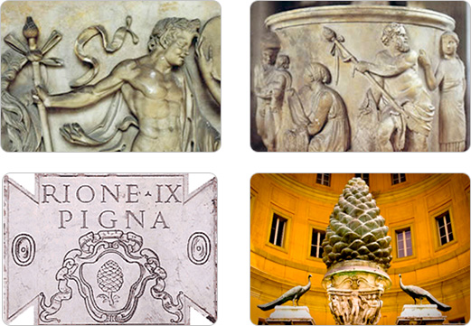

HISTORY & SYMBOLISM
 Throughout the span of recorded human history, Pinecones have served as a symbolic representation of Human Enlightenment, the Third Eye and the Pineal Gland.
Throughout the span of recorded human history, Pinecones have served as a symbolic representation of Human Enlightenment, the Third Eye and the Pineal Gland.
Conifer Pine Trees are one of the most ancient plant genera on the planet, having existed nearly three times longer than all flowering plant species. The Pinecone is the evolutionary precursor to the flower, and its spines spiral in a perfect Fibonacci sequence in either direction, much like the Sacred Geometry of a rose or a sunflower.
Our “Pine”al Gland, shaped like (and named after) the Pinecone, is at the geometric center of our brain and is intimately linked to our body's perception of light. The Pineal modulates our wake-sleep patterns and circadian rhythms, remains uniquely isolated from the blood-brain barrier system, and receives a higher percentage of blood flow than any other area of the body save the kidneys.
It is considered by many to be our biological Third Eye, the "Seat of the Soul," the “Epicenter of Enlightenment” -- and its sacred symbol throughout history, in cultures around the world, has been the Pinecone.
 The Egyptian Staff of Osiris, dating back to approximately 1224 BC, depicts two intertwining serpents rising up to meet at a pinecone. Modern scholars and philosophers have noted the staff’s symbolic parallels to the Indian “Kundalini,” a spiritual energy in the body depicted as coiled serpents rising up from the base of the spine to the Third Eye (Pineal Gland) in the moment of enlightenment. Awakened Kundalini represents the merging and alignment of the Chakras, and is said to be the one and only way to attain the “Divine Wisdom” brining pure joy, pure knowledge and pure love.
The Egyptian Staff of Osiris, dating back to approximately 1224 BC, depicts two intertwining serpents rising up to meet at a pinecone. Modern scholars and philosophers have noted the staff’s symbolic parallels to the Indian “Kundalini,” a spiritual energy in the body depicted as coiled serpents rising up from the base of the spine to the Third Eye (Pineal Gland) in the moment of enlightenment. Awakened Kundalini represents the merging and alignment of the Chakras, and is said to be the one and only way to attain the “Divine Wisdom” brining pure joy, pure knowledge and pure love.
Depictions of Hindu deities are also interwoven with both literal and symbolic representations of serpents and pinecones. In some cases, Hindu gods are carved, sculpted or drawn holding a pinecone in outstretched hand. Shiva, the most prominent god in the Hindu tradition, is consistently depicted with a head, or coiled hair, shaped in marked similarity to a pinecone and interwoven with a serpent or serpents.
In addition to spiritual consciousness and enlightenment, pinecones have also historically been used as symbols of everlasting or eternal life. Ancient Assyrian palace carvings, dating back to 713-716 BC depict four-winged God-like figures purposefully holding aloft pinecones, or in some cases, using a pinecone to pollinate their depiction of the Tree of Life -- a tribute, perhaps, to both the Pinecone’s immortality symbolism and its role as an icon of enlightenment.
In yet another culture’s tribute to the Pinecone as symbolic of spiritual ascension and immortality, a statue of the Mexican god “Chicomecoatl” (“Seven Snakes”) again depicts the deity offering forth pinecones in one hand, and an evergreen tree in the other.
The Greeks and Romans also incorporated the Pinecone into their elaborate systems of religious belief and mythology. Dionysus, later known as Bacchus to the Romans, was continually depicted ca
rrying a “Thyrsus,” a fennel staff woven with ivy and leaves and topped with a pinecone. The Thyrsus, purported to drip with honey, was regularly used as a sacred instrument at religious rituals and fetes.
Romans later built an enormous bronze sculpture, the “Pigna,” in the shape of a huge pinecone three stories tall. According to a popular medieval legend, the sculpture stood on top of the Pantheon, as a lid for the round opening in the center of the building's vault. The Pigna is confirmed to have served as a large fountain overflowing with water next the Temple of Isis in Ancient Rome, however, the gigantic statue now sits directly in front of the Catholic Vatican in the “Court of the Pinecone.”
Catholic religious tradition is intricately interwoven with pinecones, perhaps most prominently atop the sacred staff carried by the Pope himself. The Coat of Arms of the Holy See, found on the Vatican flag among other places, features a stacking of three crowns suspiciously similar in shape to a pinecone. The very name, “Holy See,” appears to many to be a direct reference to the Third Eye…
 Pinecones also turn up as sources of “illumination” in the church, such as candleholders and lamps, seemingly symbolic of the spiritual illumination the Third Eye represents. All of these factors lead conspiracy theorists and philosophers to accuse the Catholic church of using Christianity/Catholicism as a veil to blind the public to true spiritual enlightenment: The awakening of our Pineal Gland.
Pinecones also turn up as sources of “illumination” in the church, such as candleholders and lamps, seemingly symbolic of the spiritual illumination the Third Eye represents. All of these factors lead conspiracy theorists and philosophers to accuse the Catholic church of using Christianity/Catholicism as a veil to blind the public to true spiritual enlightenment: The awakening of our Pineal Gland.
 One theory proposes that the Pinecone was actually the fruit from the Tree of the Knowledge of Good and Evil, purported in Genesis to have been eaten by Eve at the urgings of a serpent, and leading to the eviction of mankind from the Garden of Eden. This concept proves particularly provocative given the consistent reappearance of pinecone images with serpents and snake references across cultures.
One theory proposes that the Pinecone was actually the fruit from the Tree of the Knowledge of Good and Evil, purported in Genesis to have been eaten by Eve at the urgings of a serpent, and leading to the eviction of mankind from the Garden of Eden. This concept proves particularly provocative given the consistent reappearance of pinecone images with serpents and snake references across cultures.
The Bible itself alludes to pinecones and the Pineal Gland on several occasions, sometimes quite specifically. Beginning in Genesis, Jacob wrestles all night with God, and is commanded to change his name to Israel. The bible then purports the following:
And Jacob called the name of the place Peniel: “For I have seen God face to face, and my life is preserved. And as he passed over Peniel the sun rose upon him.
--Genesis 32:30-31
(Literal Biblical translation of the word “Peniel” means “Face of God”)
In another interesting passage, Matthew seems to provide an uncannily similar description of the Third Eye to texts of the Yogic and Hindu spiritual traditions. This verse is also interesting because the Pineal Gland is the only part of the brain that is “single,” not possessing a left and right hemisphere.
The light of the body is the eye: if therefore your eye be single, your whole body shall be full of light.
--Matthew 6:22
Matthew’s description also appears pertinent to recent pineal experimentation conducted in amphibians. Pineal supplementation in frogs, which possess a more prominent Pineal Gland, results in a physical “lightening” of their entire skin pigmentation. The Pineal Gland in some reptiles actually still contains “rods“ and “cones“ as in our retinas, and is capable of directly perceiving light.
This final verse from Hosea, seems to more directly address the connection between spirituality and the Pinecone/Pine Tree:
O Ephraim, what more have I to do with idols?
I will answer him and care for him.
I am like a green pine tree;
your fruitfulness comes from me.
--Hosea 14:8
 In addition to critical theories relating to Christianity and the Catholic Church, conspiracy theorists also point to the presence of pinecones in Freemason architecture and symbolism as another example of organized spiritual oppression. They believe the Freemasons fully understand the spiritual significance of the Third Eye, and regularly pay iconic tribute to it, while continuing to placate the masses with a doctrine of religious and cultural dogma.
In addition to critical theories relating to Christianity and the Catholic Church, conspiracy theorists also point to the presence of pinecones in Freemason architecture and symbolism as another example of organized spiritual oppression. They believe the Freemasons fully understand the spiritual significance of the Third Eye, and regularly pay iconic tribute to it, while continuing to placate the masses with a doctrine of religious and cultural dogma.
Pinecones regularly appear framed in Freemason Octagons on the ceilings of Masonic Lodges, and Large Freemason sculptures on the side of the Whitehall Building in the New York Financial District goes so far as to depict two enormous intertwining snakes spiraling up to a pinecone overlooking Battery Place (which is striking similarity to the Staff of Osiris).
Taking things yet another step further, conspiracy theorists also point out the flaunting of pinecone symbolism by Hitler and Nazi Germany, as evidenced by pinecone-topped staffs inlayed into Hitler’s desk, and pinecones hidden in the body of the classic Nazi eagle icon.
Yet another increasingly popular theory claims that Fluoride was introduced to our water supply as a means of oppressing spiritual awakening and consciousness by broad organizations, such as the Free Masons and Illuminati.
In 1997, British Dr. Jennifer Luke extensively documented the Pineal Gland as the primary target for Fluoride accumulation in our bodies, where it calcifies the Pineal, inhibiting blood flow and “clogging” the basic functions of our Third Eye.
By feeding the public Fluoride from birth, critics claim that secret societies working within our government have attempted to maintain greater spiritual and social complacence by chemically clouding our biological portal to spiritual awareness.
Psychopharmacologist Rick Strassman believes the Third Eye/Pineal Gland to be the source of the psychedelic Dimethyltryptamine (DMT) in our bodies. Strassman has hypothesized that large amounts of DMT are released in our bodies during heightened states of spiritual consciousness, such as birth, death and near-death experiences -- or perhaps during the awakening of our Kundalini in a moment of Enlightenment.
Synthesized DMT, or plants containing DMT are often used as recreational psychedelics, or in shamanic ceremonies, such as the Ayahuasca ceremony originating in South America. DMT and/or Ayahuasca users often report intensely entheogenic experiences of spiritual awakening, contact with entities of supernatural or spiritual origin, and the dilation or compression of time.
It is worth noting that among reports of thousands users experiences with Ayahuasca, the Serpent is documented as the the most commonly appearing archeatype in their spiritual/psychedelic visions.
Pinecone related similarities have also shown up in Crop Circles. Although crop circles are typically representative of a wide range of items and ideas, the two featured here reflect noteworthy Pinecone/Third Eye parallels…
 As with many iconic symbols throughout history (the Swastika, the Christian Cross, the All-Seeing-Eye on the dollar bill), the totemic power of the Pinecone has been used by a broad spectrum of both positive and negative cultural forces throughout history to reference and allude to Spiritual Enlightenment and the Third Eye.
As with many iconic symbols throughout history (the Swastika, the Christian Cross, the All-Seeing-Eye on the dollar bill), the totemic power of the Pinecone has been used by a broad spectrum of both positive and negative cultural forces throughout history to reference and allude to Spiritual Enlightenment and the Third Eye.
Modern-day organizations appear to be toting the Pinecone’s symbolic power over the masses, while simultaneously disguising its true importance -- and may even be seeking to chemically block or poison our Third Eye via Fluorinated public drinking water.
Third Eye Pinecone Talismans represent a reclamation of the emblematic power and natural beauty of the Pinecone, the Pineal Gland, and the ancient historical heritage accompanying one of Mother Nature’s most compelling organic symbols.
Third Eye Pinecone Necklaces and Talismans are made from the polished cross-section of a living pinecone, sustainably harvested in unique micro-climates, and specially cut, dried, cured and encased in protective resin. They are elegant, natural, unique, and symbolize the evolution of collective consciousness while harnessing the potent spiritual energy of the Pineal Gland and of the Third Eye.
Thank you for your interest in Pinecones. Should you wish to support the dissemination of this information, please visit our Products Page to purchase your own unique Pinecone Talisman or necklace.